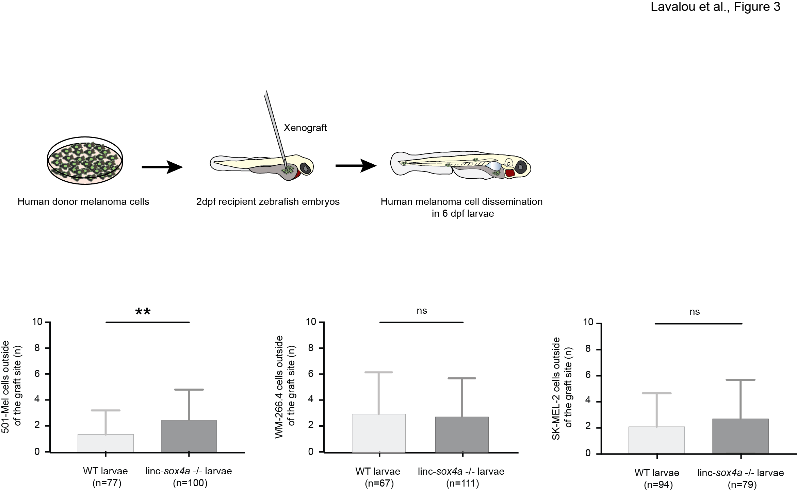

{kind=link}
>
L’identification de divers gènes cibles impliqués dans la progression cancéreuse est
cruciale afin de décrypter les mécanismes sous-jacents au cancer et de développer des
stratégies thérapeutiques efficaces. Les lncARN (longs ARN non codants) sont similaires aux
ARN messagers d’un point de vue moléculaire, mais ne présentent pas de potentiel codant
pour des protéines. Ils sont fréquemment dérégulés et mutés dans de nombreux types de
cancers. Tout comme les gènes codants pour des protéines, les lncARN des vertébrés peuvent
être conservés à plusieurs niveaux: séquence, profil d’expression ou position génomique
(synténie). Seuls 2% des lncARN du poisson zèbre présentent une préservation de séquence
avec l’homme, tandis que plus de 35% sont conservés au niveau synténique, indiquant la
présence d’une pression évolutive préservant la position génomique des lncARN. Afin
d’évaluer si ce phénomène synténique peut prédire la conservation fonctionnelle des lncARN,
j’ai établi un criblage génétique inverse évaluant le rôle des lncARN dans le développement
du mélanome. Ces études ont été effectuées chez le poisson zèbre, un modèle animal
présentant de multiples similarités génétiques, histologiques et physiologiques avec la peau
humaine.
En utilisant la technologie d’édition du génome CRISPR-Cas9 pour générer les lignées
de poissons zèbres mutants pour une sélection de 6 lncARN candidats, j’ai mesuré l’impact de
la perte de fonction de ces lncARN sur la progression du mélanome, induit chez le poisson
zèbre via l’expression de l’oncogène humain NRASG12 et la xénogreffes de cellules de
mélanome humain. Lors de cette étude, j’ai identifié menhir (MElaNoma HIndrance long
noncoding RNA) comme un gène suppresseur de tumeur dans le mélanome. En effet, les
poisson zèbres mutants pour menhir présentent une altération de l’agressivité du mélanome
caractérisée par (1) une augmentation de la tumorigenèse, (2) une baisse de la survie, (3) une
augmentation de la sévérité du mélanome et (4) une augmentation du potentiel métastatique
due à une plus grande permissivité à l’invasion des cellules du mélanome. Afin d’analyser si
la fonction anti-oncogène de menhir est conservée dans l’évolution, nous avons exprimé
l’homologue humain CASC15 (Cancer Susceptibility 15) dans les mélanocytes des poissons
zèbres mutants pour menhir affectés par le mélanome. Malgré l’absence de conservation de
séquence, l’expression de CASC15 atténue le phénotype d’agressivité du mélanome des
poissons mutants pour menhir, entrainant une diminution de la progression du cancer, de la
tumorigenèse et une amélioration de la survie des individus mutants affectés par le mélanome.
Par conséquent, mes résultats identifient un nouveau lncARN suppresseur de tumeur
dans le mélanome et montrent que la conservation de position génomique peut être corrélée
avec une conservation de fonction.
Télécharger ma thèse
Lavalou et al., RNA, 2019
abstract...
abstract...